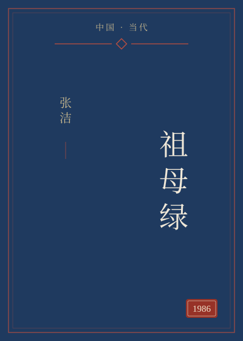
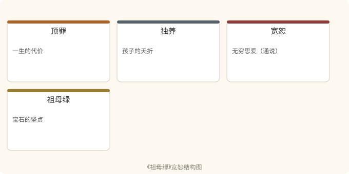

祖母绿
一、基本信息
| 作者 | 张洁 |
|---|---|
| 成书/出版 | 发表年份待核（新华网 C024：正文所列张洁代表作包括'《祖母绿》'） 北京作协悼念张洁：爱，是不能忘记的（新华网）（官方媒体） |
| 国别/地区 | 中国 |
| 时代 | 现当代 · 当代 |
| 体裁 | 中篇小说 |
| 语言 | 汉语（白话） |

《祖母绿》宽恕结构图（主题·结构图）
二、创作背景
新华网（C024）：正文所列张洁代表作包括'《祖母绿》'。
题材（通说待核）：曾令儿为爱牺牲一生——'无穷思爱'的宽恕书写。
三、内容脉络
曾令儿替恋人顶罪、独自抚养孩子——多年的牺牲（通说待核）。
'无穷思爱'：超越怨恨的爱（通说待核）。
四、主要人物表
| 人物 | 身份 | 说明 |
|---|---|---|
| 曾令儿 | 技术员 | 牺牲者（通说待核） |
| 左葳 | 恋人 | 被宽恕者（通说待核） |
五、主题与艺术特点
- '无穷思爱'（通说待核——篇末语）。
- 宽恕与自尊（通说）。
- 张洁的温情面（与《方舟》对照）。
六、影响与评论
- 新华网：列入张洁代表作（C024）。
北京作协悼念张洁：爱，是不能忘记的（新华网）（官方媒体） - 全国优秀中篇小说奖（1985—86说——通说待核）。
北京作协悼念张洁：爱，是不能忘记的（新华网）（官方媒体）
七、阅读建议
难点
- 宽恕主题的情感强度。
- 道德的高标。
- 《祖母绿》（收于张洁小说集，通说待核）。
与《方舟》对照：张洁的两种女性答案。
八、待核实
- 首刊（《钟山》1986年说）待核。
- 曾令儿/左葳人名核对。
- '无穷思爱'原文核对。
本页主要来源
张洁的其他收录作品：无字